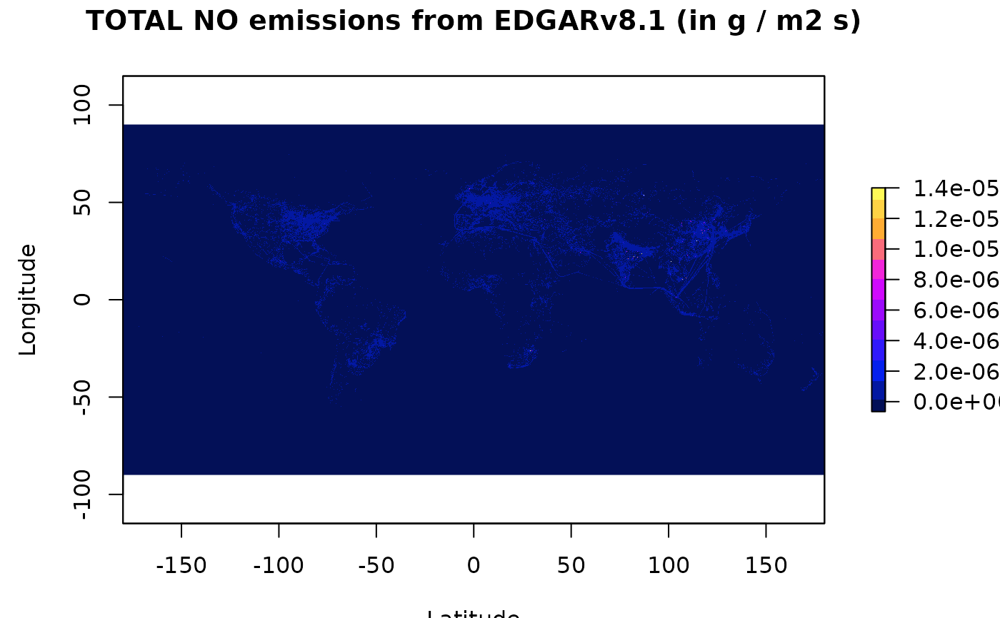
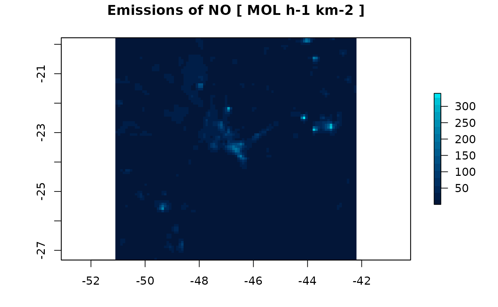

Read data from global inventories. Several files can be read to produce one emission output and/or can be splitted into several species
Usage
read(
file = file.choose(),
version = NA,
coef = rep(1, length(file)),
spec = NULL,
year = 1,
month = 1,
hour = 1,
categories,
reproject = TRUE,
as_raster = TRUE,
skip_missing = FALSE,
verbose = TRUE
)Source
Read abbout EDGAR at http://edgar.jrc.ec.europa.eu and MACCITY at http://accent.aero.jussieu.fr/MACC_metadata.php
More info for EDGARv8.1 https://edgar.jrc.ec.europa.eu/dataset_ap81 for short live species and https://edgar.jrc.ec.europa.eu/dataset_ghg80 for GHG
Arguments
- file
file name or names (variables are summed)
- version
Character; One of of the following:
argument tested region resolution projection EDGAR 4.32 and 5.0 Global 0.1 x 0.1 ° longlat EDGAR_HTAPv2 2.2 Global 0.1 x 0.1 ° longlat EDGARv8m 8.1 monthly Global 0.1 x 0.1 ° longlat EDGARv8 8.1 Global 0.1 x 0.1 ° longlat GAINS v5a Global 0.5 x 0.5 ° longlat RCP RCP3PD Glb Global 0.5 x 0.5 ° longlat MACCITY 2010 Global 0.5 x 0.5 ° longlat FFDAS 2.2 Global 0.1 x 0.1 ° longlat ODIAC 2020 Global 1 x 1 ° longlat VULCAN-y 3.0 US 1 x 1 km lcc VULCAN-h 3.0 US 1 x 1 km lcc ACES 2020 NE US 1 x 1 km lcc - coef
coefficients to merge different sources (file) into one emission
- spec
numeric speciation vector to split emission into different species
- year
scenario index (only for GAINS and VULCAN-y)
- month
the desired month of the inventory (MACCITY and ODIAC)
- hour
hour of the emission (only for ACES and VULCAN-h)
- categories
considered categories (for MACCITY/GAINS variable names), empty for use all
- reproject
to project the output to "+proj=longlat" needed for emission function (only for VULCAN and ACES)
- as_raster
return a raster (default) or matrix (with units)
- skip_missing
return a zero emission and a warning for missing files/variables
- verbose
display additional information
References
Janssens-Maenhout, G., Dentener, F., Van Aardenne, J., Monni, S., Pagliari, V., Orlandini, L., ... & Wankmüller, R. (2012). EDGAR-HTAP: a harmonized gridded air pollution emission dataset based on national inventories. European Commission Joint Research Centre Institute for Environment and Sustainability. JRC 68434 UR 25229 EUR 25229, ISBN 978-92-79-23123-0.
Lamarque, J.-F., Bond, T. C., Eyring, V., Granier, C., Heil, A., Klimont, Z., Lee, D., Liousse, C., Mieville, A., Owen, B., Schultz, M. G., Shindell, D., Smith, S. J., Stehfest, E., Van Aardenne, J., Cooper, O. R., Kainuma, M., Mahowald, N., McConnell, J. R., Naik, V., Riahi, K., and van Vuuren, D. P.: Historical (1850-2000) gridded anthropogenic and biomass burning emissions of reactive gases and aerosols: methodology and application, Atmos. Chem. Phys., 10, 7017-7039, doi:10.5194/acp-10-7017-2010, 2010.
Z Klimont, S. J. Smith and J Cofala The last decade of global anthropogenic sulfur dioxide: 2000–2011 emissions Environmental Research Letters 8, 014003, 2013
Gurney, Kevin R., Jianming Liang, Risa Patarasuk, Yang Song, Jianhua Huang, and Geoffrey Roest (2019) The Vulcan Version 3.0 High-Resolution Fossil Fuel CO2 Emissions for the United States. Nature Scientific Data.
Examples
# \donttest{
folder <- file.path(tempdir(), "EDGARv8.1")
dir.create(folder)
url <- "https://jeodpp.jrc.ec.europa.eu/ftp/jrc-opendata/EDGAR/datasets"
dataset <- "v81_FT2022_AP_new/NOx/TOTALS/flx_nc"
file <- "v8.1_FT2022_AP_NOx_2022_TOTALS_flx_nc.zip"
download.file(paste0(url,"/",dataset,"/",file), paste0(folder,"/",file))
unzip(paste0(folder,"/",file),exdir = folder)
nox <- read(file = dir(path=folder, pattern="flx\\.nc", full.names=TRUE),
version = "EDGARv8",
spec = c(E_NO = 0.9 , # 90% of NOx is NO
E_NO2 = 0.1 )) # 10% of NOx is NO2
#> reading EDGARv8 emissions, output unit is g m-2 s-1 ...
#> from /tmp/RtmpRJgcFd/EDGARv8.1/v8.1_FT2022_AP_NOx_2022_TOTALS_flx.nc fluxes x 1.000000
#> using the following speciation:
#> E_NO = 0.9
#> E_NO2 = 0.1
# creating a color scale
cor <- colorRampPalette(colors = c(c("#031057", "#0522FC",
"#7E0AFA", "#EF0AFF",
"#FFA530", "#FFF957")))
raster::plot(nox$E_NO, xlab="Latitude", ylab="Longitude",
col = cor(12),zlim = c(-6.5e-7,1.4e-5),
main="TOTAL NO emissions from EDGARv8.1 (in g / m2 s)")

d1 <- gridInfo(paste(system.file("extdata", package = "EmissV"),"/wrfinput_d01",sep=""))
#> Grid information from: /home/runner/work/_temp/Library/EmissV/extdata/wrfinput_d01
NO <- emission(grid = d1, inventory = nox$E_NO, pol = "NO", mm = 30.01,plot = TRUE)
#> Using raster from inventory for NO ...
#> Grid output: 99 columns 93 rows

# }